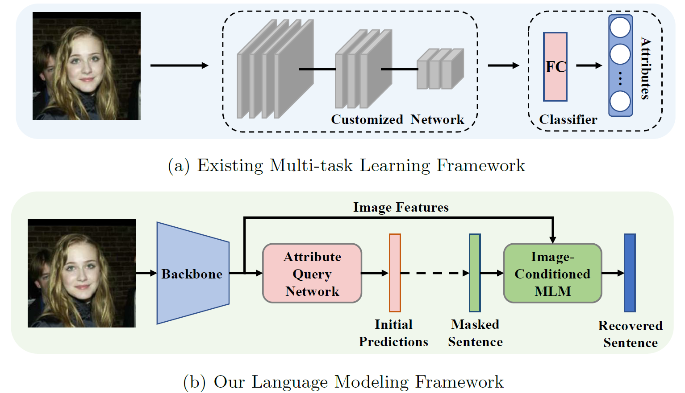
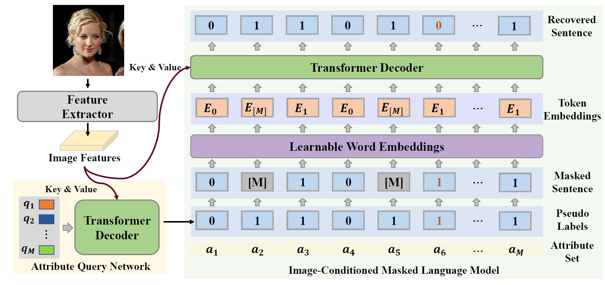
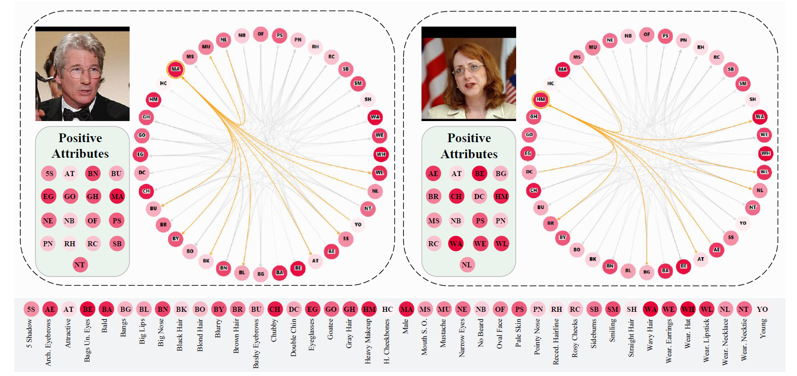

Label2Label: A Language Modeling Framework for Multi-Attribute Learning
Objects are usually associated with multiple attributes, and these attributes often exhibit high correlations. Modeling complex relationships between attributes poses a great challenge for multi-attribute learning. This paper proposes a simple yet generic framework named Label2Label to exploit the complex attribute correlations. Label2Label is the first attempt for multi-attribute prediction from the perspective of language modeling. Specifically, it treats each attribute label as a "word" describing the sample. As each sample is annotated with multiple attribute labels, these "words" will naturally form an unordered but meaningful "sentence", which depicts the semantic information of the corresponding sample. Inspired by the remarkable success of pre-training language models in NLP, Label2Label introduces an image-conditioned masked language model, which randomly masks some of the "word" tokens from the label "sentence" and aims to recover them based on the masked "sentence" and the context conveyed by image features. Our intuition is that the instance-wise attribute relations are well grasped if the neural net can infer the missing attributes based on the context and the remaining attribute hints. Label2Label is conceptually simple and empirically powerful. Without incorporating task-specific prior knowledge and highly specialized network designs, our approach achieves state-of-the-art results on three different multi-attribute learning tasks, compared to highly customized domain-specific methods. Code is available at https://github.com/Li-Wanhua/Label2Label.

For a given sample, many of its attributes are correlated. Modeling complex inter-attribute associations is an important challenge for multi-attribute learning. To address this challenge, most existing approaches adopt a multi-task learning framework, which formulates multi-attribute recognition as a multi-label classification task and simultaneously learns multiple binary classifiers. We propose a language modeling framework named Label2Label to model the complex instance-wise attribute relations. Specifically, we regard an attribute label as a "word", which describes the current state of the sample from a certain point of view. By treating multiple attribute labels as a “sentence”, we exploit the correlation between attributes with a language modeling framework.

Given an input image, we first obtain the image features with a feature extractor. Then the image features are input to the attribute query network to obtain the predicted label sequence.We randomly mask some "words" and generate the masked "sentence". We attain a sequence of token embeddings using a word embedding module. In the end, we recover the entire label "sentence" with a Transformer decoder module, which is conditioned on the token embeddings and image features. Although there are some wrong "words" in the pseudo labels, which are shown in orange, we can treat them as another form of masks.
Visualization of attention scores among attributes in the self-attention layer.We show the attention of the first head at layer 1 with two samples. The positive attributes of each sample are listed in the corresponding bottom-left corner. For the first sample, that attribute "Male" is strongly related to the presence of "5 o’clock shadow" and the absence of "Wearing Lipstick" and "Wearing Necklace". For the second sample, the attribute "Heavy Makeup" assigns more attention to the existence of the attributes "Wearing Lipstick", "Wearing Necklace", "Attractive", and "Arched Eyebrows".

@inproceedings{li2022label2label,
author = {Li, Wanhua and Cao, Zhexuan and Feng, Jianjiang and Zhou, Jie and Lu, Jiwen},
title = {Label2Label: A Language Modeling Framework for Multi-Attribute Learning},
booktitle = {European Conference on Computer Vision (ECCV)},
year = {2022},
}